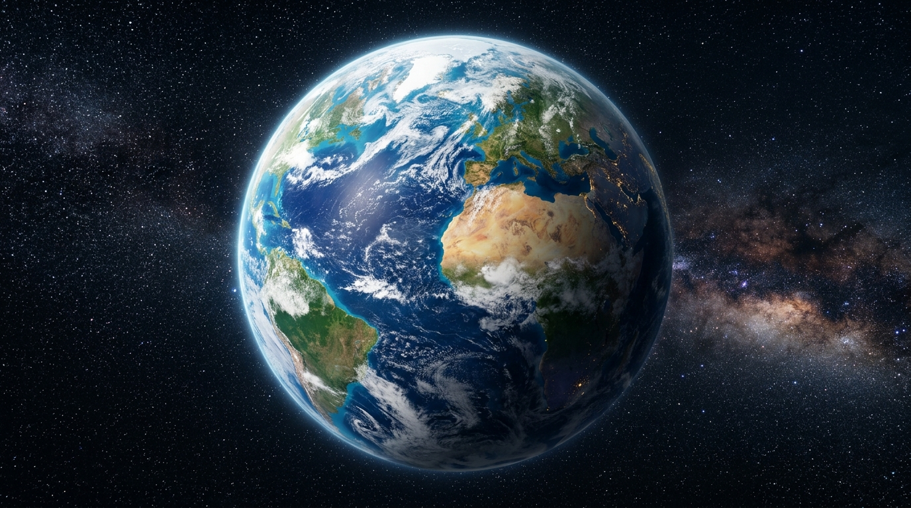
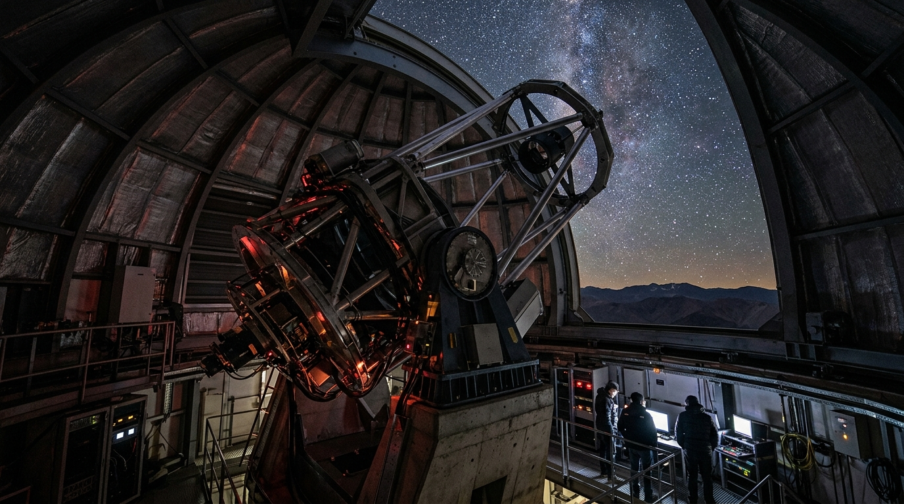
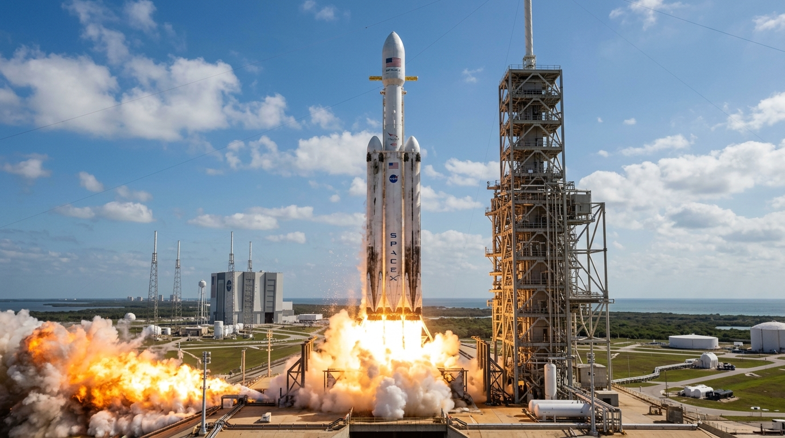
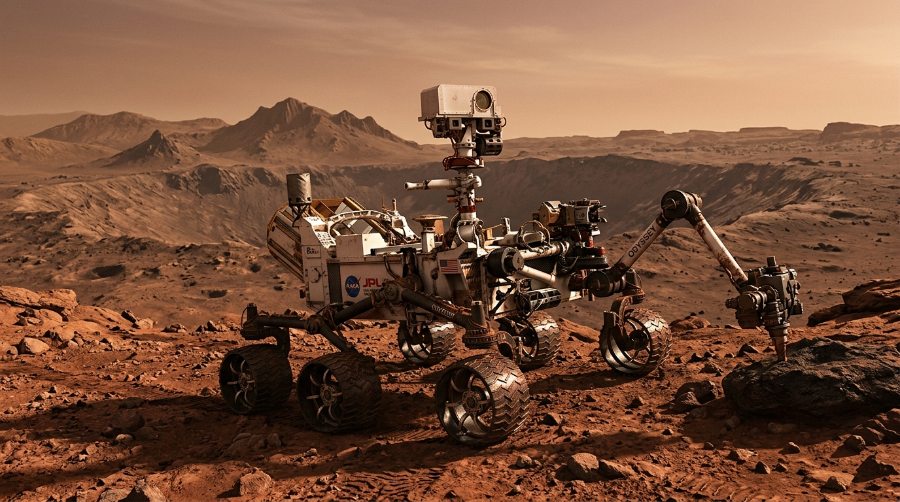
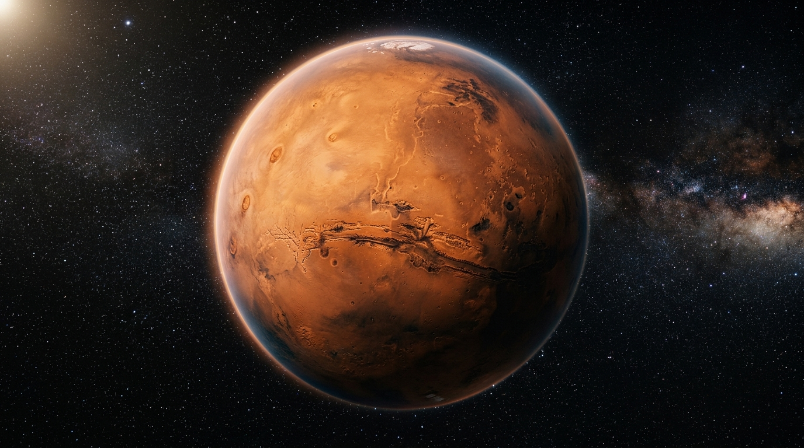

Workshop Sessions

Session 1
Our Home: Earth & the Solar System
Core Concepts: Birth of the Solar System, Rocky vs. Gas Giants (Frost Line), magnetic protection, and the "Pocket Solar System" scale fold activity.

Session 2
Next Stop: Mars
Core Concepts: How telescopes work (lenses vs. mirrors, Hubble vs. JWST). Choosing Mars over other planets, and evaluating Martian landing sites.

Session 3
Building the Rocket & Surviving the Landing
Core Concepts: Action/Reaction (Newton's 3rd Law), rocket stages. Entering the Martian atmosphere, heat shields, parachutes, and impact shock absorption.

Session 4
Exploring Mars & Communicating with Earth
Core Concepts: Planetary rovers, obstacle sensors, and automated decision making. Radio signals, the speed of light, and the time delay to Mars.

Final Question
The Mars Dilemma
"Now that you know how hard it is to get there and survive, would you still go to Mars?"